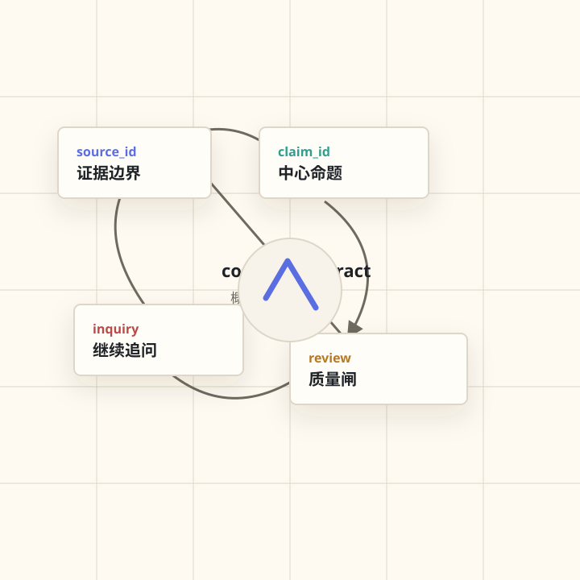

看起来像推理
但没有证据边界。
CrossFrame Skill Suite
不是让 AI 更快回答，而是让 AI 在回答前先交账，在回答后还能继续追问。
CrossFrame 会先拆清事实、证据、尺度、机制、判断档位和行动边界，再生成可审查、可追问的中文输出。

Pain Point
它能把一个判断写得顺滑，却不告诉你事实在哪里、证据到哪一档、哪些只是推测、什么情况必须撤回。
但没有证据边界。
但把比喻当证明。
但没有撤回条件。
How It Works
事实、解释、推测和来源分开，不让顺滑表达替代证据。
个人、关系、组织、制度和历史阶段不能混写成同一种判断。
中心命题必须绑定 claim_id，来源必须绑定 source_id。
正文不能强于台账，生成层不能自己宣布质量通过。
Workflow Loop
生成事实边界、机制候选和 claim ledger。
把结构判断写成普通读者能读懂的中文。
抽句反查 source_id、claim_id 和概念契约。
完成后继续反证、补证、迁移和收束。
Demo Cards
Skill Map
Quality Gate
请深入分析。
这条判断对应哪个 claim_id？来源能证明什么，不能证明什么？用了哪个 concept contract？什么情况必须撤回？正文有没有强于台账？
Install / Try
FAQ
不会。CrossFrame 是 explicit-only，只有用户明确点名 CrossFrame 或对应 skill 时才启动。
提示词模板通常要求“说得更好”。CrossFrame 要求回答前交台账，回答后可审查、可追问、可降档。
因为完整分析、成文和 review 结束后，真正有价值的下一步通常是反证、补证、迁移和行动边界确认。